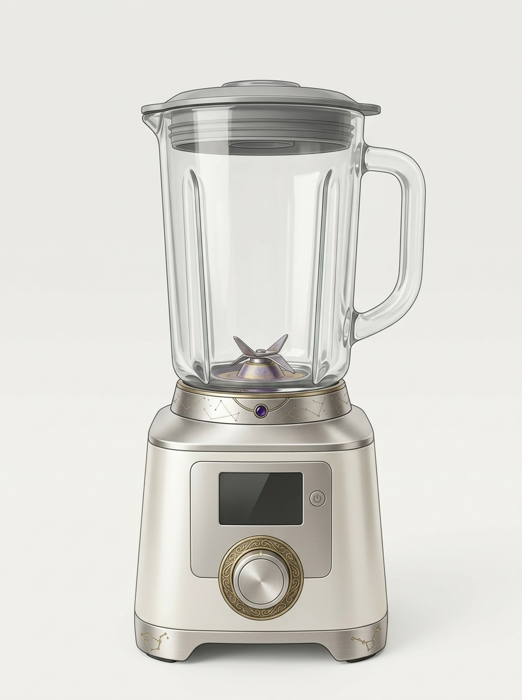
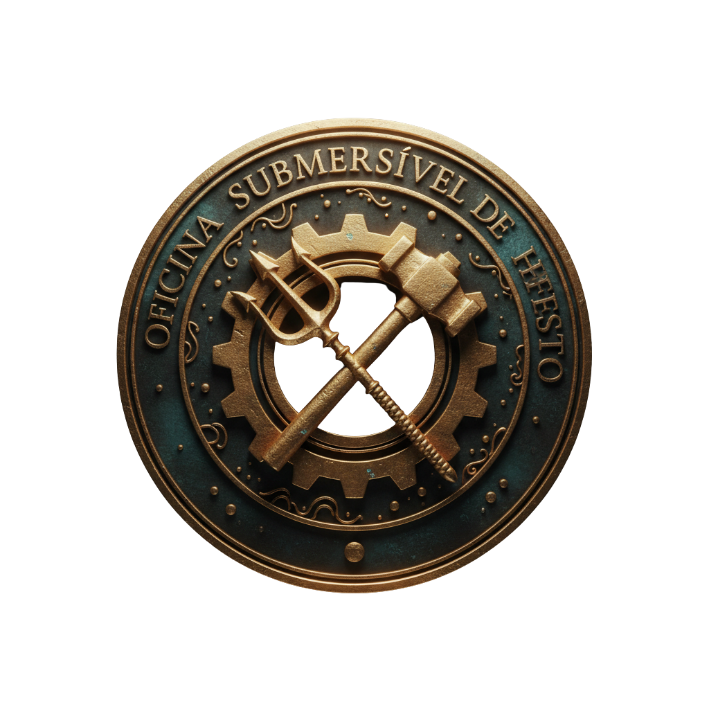
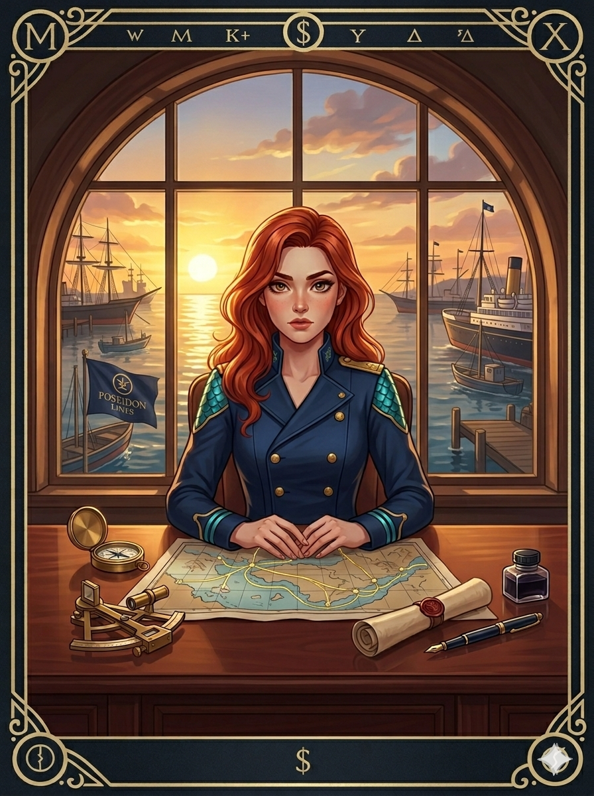
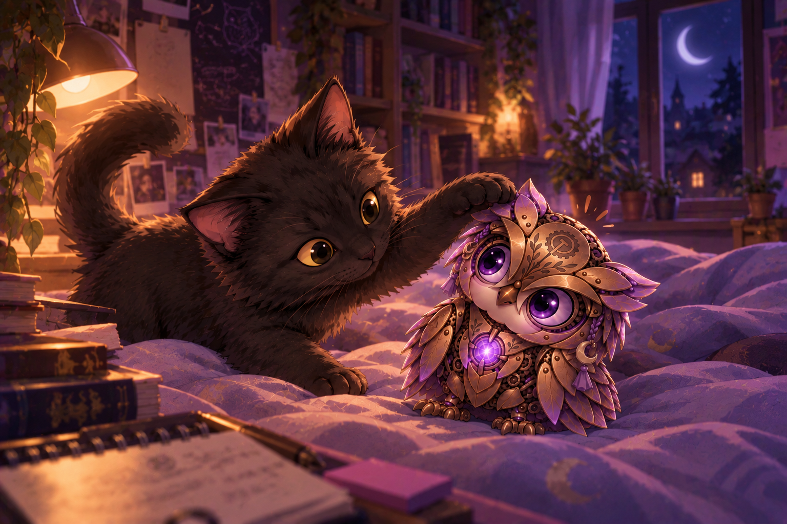

01Eaí · conversa em andamento
Antes da campainha
EaíBia, Caio e Sofia
BiaSofia, essa entrega apareceu no seu celular ou o seu celular apareceu dentro da entrega?
SofiaNo celular. Eu acho. A previsão diz “Agora”.
CaioHipótese um: o entregador está preso num ciclo temporal.
BiaHipótese dois: “Agora” é uma cidade clandestina.
CaioHipótese três: a encomenda já chegou e está esperando você perceber.
SofiaA campainha acabou de tocar.
BiaEu voto na três. Não abre sozinha.
Uma encomenda está a caminho.- Destinatário
- Sofia
- Remetente
- —
- Origem
- indisponível
- Previsão
- Agora.
Eu gostaria de registrar que “Agora” não é uma previsão de entrega aceitável.
02Companhia Hermes
A encomenda chegou
Toque na caixa para conferir o conteúdo.
A caixa ainda está fechada.

Isso parece exatamente o tipo de objeto que deveria vir acompanhado de um manual muito maior.
03Loja de Hefesto · mecanismo experimental
Construa um modelo de universo
Escolha três ingredientes. A ordem não importa.
PAINEL DE RECEITASAguardando ingredientes
Selecione três fichas para iniciar o mecanismo.
Receita 01??? · ??? · ???
Ainda não estabilizada.
Receita 02??? · ??? · ???
Ainda não estabilizada.
EaíBia, Caio e Sofia
SofiaA caixa tinha um liquidificador que monta universos de teste.
BiaTalvez alguém esteja tentando ensinar cosmologia sem pagar impressão de apostila.
CaioOu é um eletrodoméstico alienígena e você acabou de preparar a sopa deles.
SofiaEle reconheceu duas explicações filosóficas diferentes.
BiaEntão foi enviado por alguém que sabe exatamente o que você está estudando.
CaioOu por você mesma no futuro. A entrega dizia “Agora”. Continuo defendendo viagem no tempo.
SofiaTem o símbolo de Hefesto. E ainda tem alguma coisa no fundo da caixa.
BiaSofia, afasta um pouco e manda foto. Sem apertar mais nada.
arquivo de investigação gerado
Duas receitas. Um único cosmos.
O que cada uma considera fundamental para explicar a realidade?
PISTA REGISTRADAO Caderno de Pistas foi atualizado.

EMBLEMA DESBLOQUEADOOficina Submersível de Hefesto
INGREDIENTE NÃO CATALOGADO
Origem detectada.
Procurando correspondência...
ARQUIVO RESIDUAL ENCONTRADO.
O arquivo não informa quem tirou a fotografia.O liquidificador eu conseguia explicar. Mais ou menos. A fotografia era outra história.
04item não relacionado
Ainda havia alguma coisa na caixa
Isso não estava na lista.
As placas metálicas vibraram. Havia alguma coisa tentando acordar.
O núcleo no peito acendeu antes dos olhos.
Sofia Oi. Você entende o que eu estou dizendo?
Lumiar tic… tic… prru.
Sofia Certo. Então uma piscada é “sim” e duas são “você não faz ideia do que está fazendo”.
Lumiar ◉ ◉
Sofia Ótimo. Já temos uma língua em comum.

Vírgula levou menos tempo para aceitar a situação do que eu.
EaíBia, Caio e Sofia
SofiaO ovo abriu. Tem uma coruja mecânica me encarando.
CaioEla veio do liquidificador?
BiaOu o liquidificador é a casca e a coruja é o universo?
CaioIsso explicaria absolutamente nada. Gosto dessa hipótese.
BiaEla está reagindo a você?
SofiaPiscou duas vezes quando eu disse que sabia o que estava fazendo.
CaioCoruja inteligente confirmada.
SofiaVou chamar ela de Lumiar.
FIM DO POST